Objectives
Start the development of an API for the donation service, focusing initially on providing access to the Candidates model. Implement the API using simple REST principles.
Lab 11 Exercise Solutions
Exercise 1:
Change the donate screen such that users can donate any amount and not just 50, 100, 1000 multiples. For example:

app/views/partials/donate.hbs
Exercise 1 Solution
Replace the drop down in donate.hbs:
<div class="ui dropdown" name="amount">
<input type="hidden" name="amount">
<div class="text">Select Amount</div>
<i class="ui dropdown icon"></i>
<div class="menu">
<div class="item">50</div>
<div class="item">100</div>
<div class="item">1000</div>
</div>
</div>...with an input field:
<div class="grouped inline fields">
<h3> Enter Amount </h3>
<div class="field">
<label>Amount</label> <input type="number" name="amount">
</div>
</div>Replace the
Exercise 2:
Modify the report view to display total donated so far:
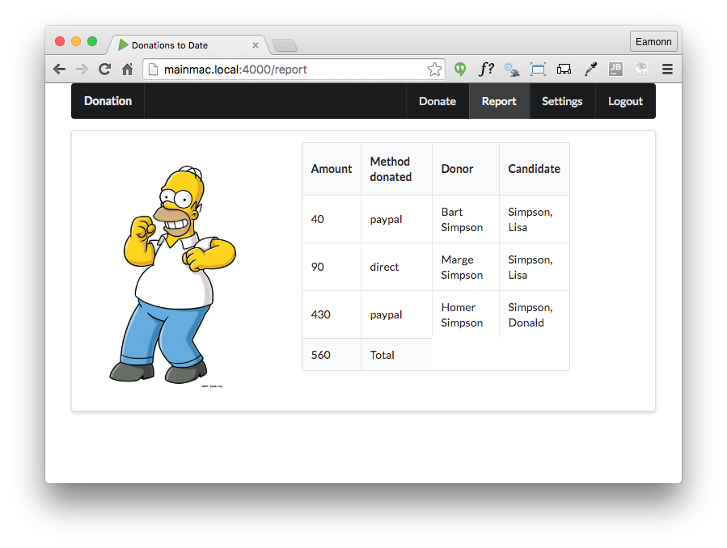
Exercise 2 Solution
app/views/partials/donationlist.hbs
Incorporate a new footer element in donationlist.hbs after the closing <tbody> tag:
<tfoot>
<tr>
<th>{{total}}</th>
<th>Total</th>
</tr>
</tfoot>app/controllers/donations.js
Rework the report route to also render the total to the view:
exports.report = {
handler: function (request, reply) {
Donation.find({}).populate('donor').populate('candidate').then(allDonations => {
let total = 0;
allDonations.forEach(donation => {
total += donation.amount;
});
reply.view('report', {
title: 'Donations to Date',
donations: allDonations,
total: total,
});
}).catch(err => {
reply.redirect('/');
});
},
};Exercise 3:
Incorporate validation into the donate view:

Exercise 3 Solution:
app/controllers/donations.js
Reimplement the donate route handler as follows:
exports.donate = {
validate: {
payload: {
amount: Joi.number().required(),
method: Joi.string().required(),
candidate: Joi.string().required(),
},
options: {
abortEarly: false,
},
failAction: function (request, reply, source, error) {
Candidate.find({}).then(candidates => {
reply.view('home', {
title: 'Invalid Donation',
candidates: candidates,
errors: error.data.details,
}).code(400);
}).catch(err => {
reply.redirect('/');
});
},
},
handler: function (request, reply) {
var userEmail = request.auth.credentials.loggedInUser;
let userId = null;
let donation = null;
User.findOne({ email: userEmail }).then(user => {
let data = request.payload;
userId = user._id;
donation = new Donation(data);
const rawCandidate = request.payload.candidate.split(',');
return Candidate.findOne({ lastName: rawCandidate[0], firstName: rawCandidate[1] });
}).then(candidate => {
donation.donor = userId;
donation.candidate = candidate._id;
return donation.save();
}).then(newDonation => {
reply.redirect('/report');
}).catch(err => {
reply.redirect('/');
});
},
};Error Reporting : Boom
As we move to developing an API for our donation-web service, we will make use of the following library:
This will simplify reporting http errors to our clients. Install in the usual way:
npm install boom -savepackage.json
{
"name": "donation-web",
"version": "1.0.0",
"description": "an application to host donations for candidates",
"main": "index.js",
"scripts": {
"start": "node index",
"test": "echo \"Error: no test specified\" && exit 1"
},
"author": "",
"license": "ISC",
"dependencies": {
"boom": "^3.2.2",
"handlebars": "^4.0.5",
"hapi": "^14.1.0",
"hapi-auth-cookie": "^6.1.1",
"inert": "^4.0.1",
"joi": "^9.0.4",
"mongoose": "^4.5.8",
"mongoose-seeder": "^1.2.1",
"vision": "^4.1.0"
}
}First Simple API Endpoint: Get All Candidates
Introduce a new folder inside app called api, and place the following module in that folder:
app/api/candidatesapi.js
'use strict';
const Candidate = require('../models/candidate');
const Boom = require('boom');
exports.find = {
auth: false,
handler: function (request, reply) {
Candidate.find({}).exec().then(candidates => {
reply(candidates);
}).catch(err => {
reply(Boom.badImplementation('error accessing db'));
});
},
};This handler returns all candidates, or a standard error message. Note that we have set no authentication:
auth: false,... which means that this call is open, and is not guarded by the session based authentication currently set as the default for our application.
routesapi.js
We new include a new routes file specifically to service the API routes:
const CandidatesApi = require('./app/api/candidatesapi');
module.exports = [
{ method: 'GET', path: '/api/candidates', config: CandidatesApi.find },
];Place this in the root of the project, which should look like this now:
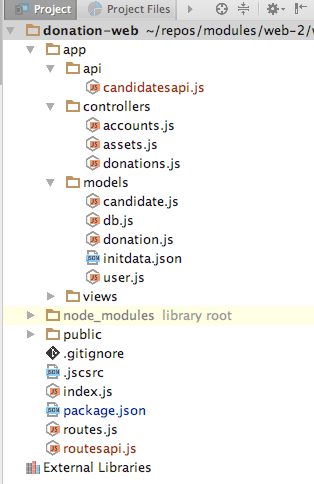
index.js
Finally, we need to include this route into the application server - this is in index.js - we can add it after the inclusion of the UI routes we have created so far::
server.route(require('./routes'));
server.route(require('./routesapi'));We can run the app now, and verify that the route can be accessed:
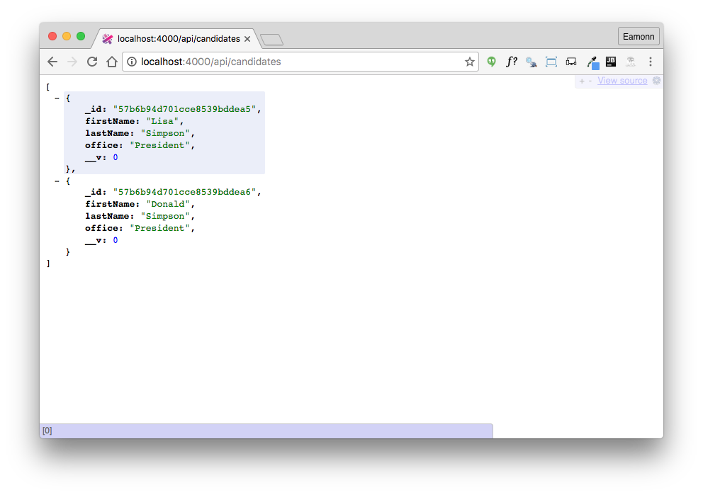
We also can see the seeded objects in the webstorm console:
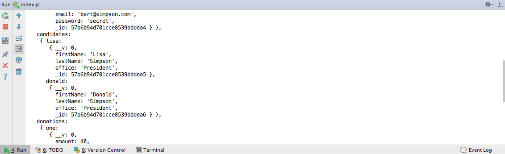
Note that these objects (including ids) should be identical.
Get Candidate Endpoint
The first endpoint we have just implemented retrieves all candidates. We can also introduce a route to retrieve a single candidate:
routesapi.js
{ method: 'GET', path: '/api/candidates/{id}', config: CandidatesApi.findOne },app/api/candidatesapi.js
exports.findOne = {
auth: false,
handler: function (request, reply) {
Candidate.findOne({ _id: request.params.id }).then(candidate => {
reply(candidate);
}).catch(err => {
reply(Boom.notFound('id not found'));
});
},
}In order to retrieve the candidate, we will need the ID for the candidate of interest:
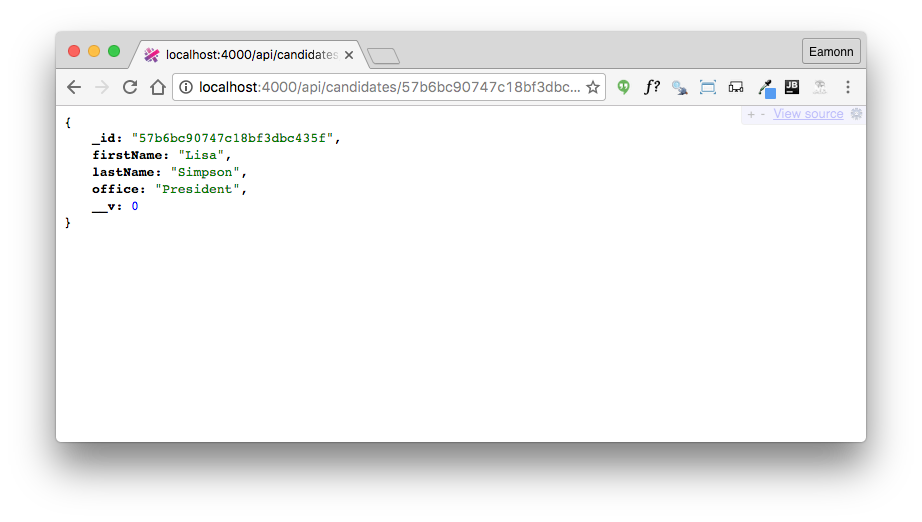
The Id changes every time we launch the application, as our database seeder clears all collections each time.
If we specify an unknown id, Boom will generate the appropriate error:
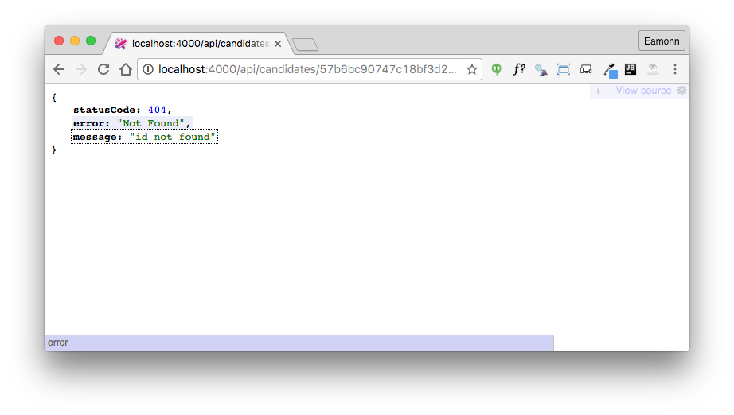
Note also, that if we use an incorrect route - for instance:
We also get the standard 404 error:
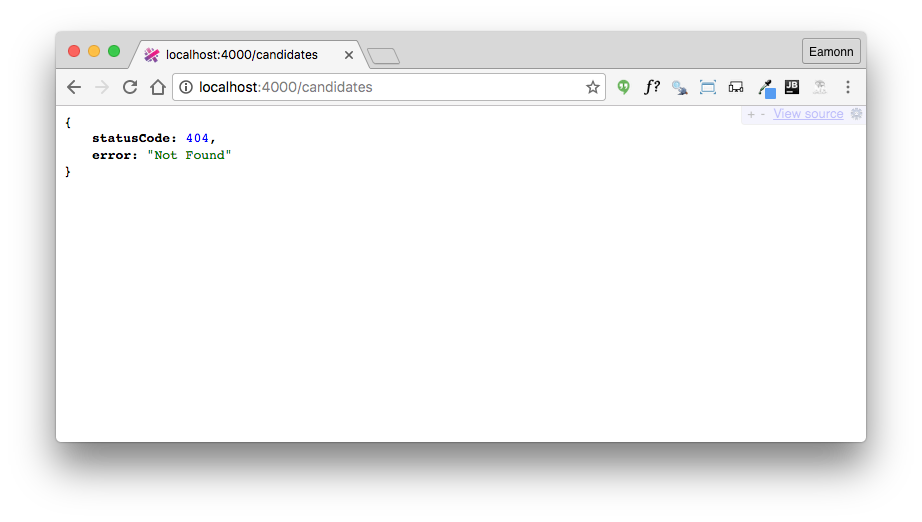
Testing the Endpoints: Postman
Using a browser to retrieve and verify the behaviour of api endpoints is a useful sanity check, but not viable as our endpoints become more sophisticated.
This is a popular tool for exercising these endpoints:
Install the standalone version now. We will make use of it occasionally as we devise more interesting api endpoints:
Build some request now for one of our endpoints:
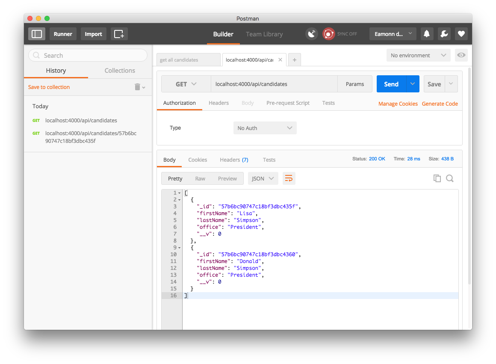
You can save and organise requests into collections:
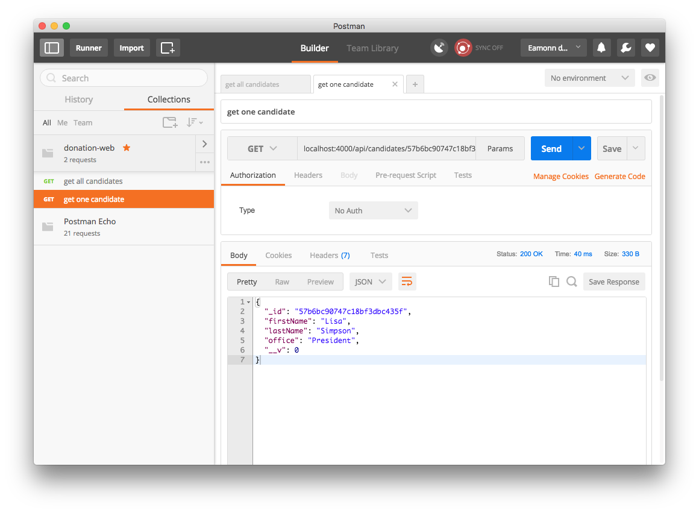
This can be useful for exercising more complex APIs
Testing the Endpoints: TDD Tools
Although Postman is useful for exploratory development, developing APIs requires a more robust testing strategy. This is the realm of Test Driven Development:
Facilitated by specialized tools and techniques. The most fundamental set of tools are based around the so-called X-Unit pattern:
We are going to use these two X-Unit related tools:
To use these tools, we need install both extensions to our WebStorm IDE and also the appropriate javascript libraries.
Mocha support should already be part of your WebStorm installation:
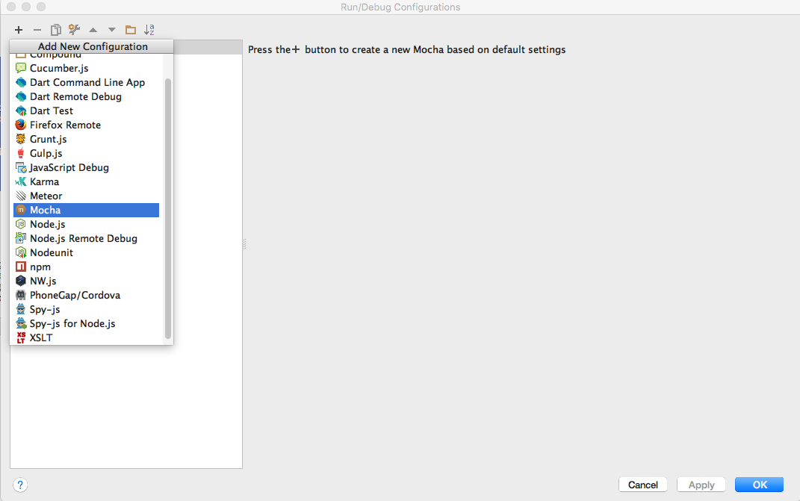
We will explore this in a moment.
To make use of TDD in our app, we need to instal the mocha and chai modules:
npm install mocha -save-dev
npm install chai -save-devNode the -save-dev switch. This establishes the libraries as development, not production, libraries - required only for dev/test purposes.
Package.json includes these references in a separate section:
{
"name": "donation-web",
"version": "1.0.0",
"description": "an application to host donations for candidates",
"main": "index.js",
"scripts": {
"start": "node index",
"test": "echo \"Error: no test specified\" && exit 1"
},
"author": "",
"license": "ISC",
"dependencies": {
"boom": "^3.2.2",
"handlebars": "^4.0.5",
"hapi": "^14.1.0",
"hapi-auth-cookie": "^6.1.1",
"inert": "^4.0.1",
"joi": "^9.0.4",
"mongoose": "^4.5.8",
"mongoose-seeder": "^1.2.1",
"vision": "^4.1.0"
},
"devDependencies": {
"chai": "^3.5.0",
"mocha": "^3.0.2"
}
}First Simple Test
Create a new folder in your project called test and create candidateapitest.js module:
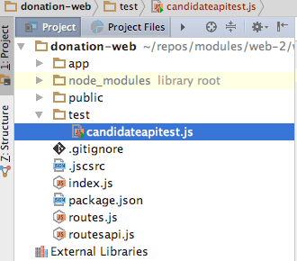
test/candidateapitest.js
'use strict';
const assert = require('chai').assert;
suite('Candidate API tests', function () {
test('get candidates', function () {
assert.equal(1, 1);
});
});This is a simple test, guaranteed to succeed.
In order to run it, select the file and select run from the context menu. We should see the built in Mocha test runner:
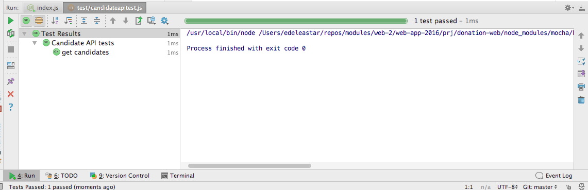
If your WebStorm installation does not auto generate the above run configuration, you may need to manually establish a run configuration in the IDE:
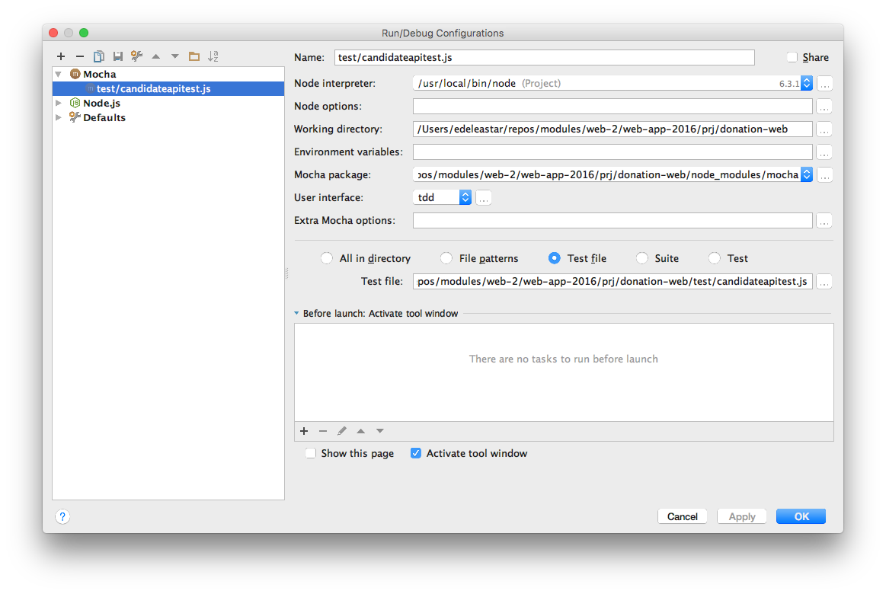
In order to gain familiarity with the Mochal test runner, change the assert to be guaranteed to fail:
assert.equal(1, 1);Now rerun the test - this is how test failures are reported:
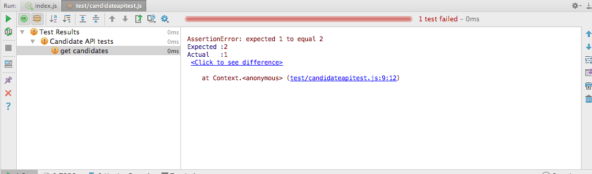
First Mocha API Test
We can now compose a test, entirely in javascript, to exercise the api we have just created.
First, we will make use of a module to encapsulate http requests:
Note the health warning here - this library is of test purposes only. It is synchronous as opposed to asynchronous:
However, the synchronous approach of this library significantly simplifies unit test composition, so we will make use of it.
Install it as a development dependency:
npm install sync-request -save-devpachage.json
{
"name": "donation-web",
"version": "1.0.0",
"description": "an application to host donations for candidates",
"main": "index.js",
"scripts": {
"start": "node index",
"test": "echo \"Error: no test specified\" && exit 1"
},
"author": "",
"license": "ISC",
"dependencies": {
"boom": "^3.2.2",
"handlebars": "^4.0.5",
"hapi": "^14.1.0",
"hapi-auth-cookie": "^6.1.1",
"inert": "^4.0.1",
"joi": "^9.0.4",
"mongoose": "^4.5.8",
"mongoose-seeder": "^1.2.1",
"vision": "^4.1.0"
},
"devDependencies": {
"chai": "^3.5.0",
"mocha": "^3.0.2",
"sync-request": "^3.0.1"
}
}Here is a revised version of the first test suite:
test/candidateapitest.js
'use strict';
const assert = require('chai').assert;
var request = require('sync-request');
suite('Candidate API tests', function () {
test('get candidates', function () {
const url = 'http://localhost:4000/api/candidates';
var res = request('GET', url);
console.log(JSON.parse(res.getBody('utf8')));
});
});Running the test will echo the returned candidates:
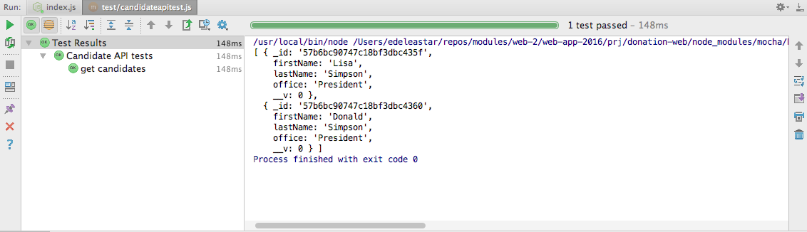
All tests should have assertions, and rarely would we make use of the console. Replace the test body with the following:
const url = 'http://localhost:4000/api/candidates';
var res = request('GET', url);
const candidates = JSON.parse(res.getBody('utf8'));
assert.equal(2, candidates.length);How do we know there are exactly two candidates? Recall that we seeded the database with the contents of app/models/initdata.json
{
"users": {
"_model": "User",
"homer": {
"firstName": "Homer",
"lastName": "Simpson",
"email": "homer@simpson.com",
"password": "secret"
},
"marge": {
"firstName": "Marge",
"lastName": "Simpson",
"email": "marge@simpson.com",
"password": "secret"
},
"bart": {
"firstName": "Bart",
"lastName": "Simpson",
"email": "bart@simpson.com",
"password": "secret"
}
},
"candidates": {
"_model": "Candidate",
"lisa": {
"firstName": "Lisa",
"lastName": "Simpson",
"office": "President"
},
"donald": {
"firstName": "Donald",
"lastName": "Simpson",
"office": "President"
}
},
"donations": {
"_model": "Donation",
"one": {
"amount": 40,
"method": "paypal",
"donor": "->users.bart",
"candidate": "->candidates.lisa"
},
"two": {
"amount": 90,
"method": "direct",
"donor": "->users.marge",
"candidate": "->candidates.lisa"
},
"three": {
"amount": 430,
"method": "paypal",
"donor": "->users.homer",
"candidate": "->candidates.donald"
}
}
}We can extend the test to make sure we actually retrieve the candidates as specified in the above data set:
test('get candidates', function () {
const url = 'http://localhost:4000/api/candidates';
var res = request('GET', url);
const candidates = JSON.parse(res.getBody('utf8'));
assert.equal(2, candidates.length);
assert.equal(candidates[0].firstName, 'Lisa');
assert.equal(candidates[0].lastName, 'Simpson');
assert.equal(candidates[0].office, 'President');
assert.equal(candidates[1].firstName, 'Donald');
assert.equal(candidates[1].lastName, 'Simpson');
assert.equal(candidates[1].office, 'President');
});This test should pass.
Testing our second route involves a little more work, as we have to request a single candidate by an ID. We get this ID from the request for all candidates.
This new test demonstrates the technique:
test('get one candidate', function () {
const allCandidatesUrl = 'http://localhost:4000/api/candidates';
var res = request('GET', allCandidatesUrl);
const candidates = JSON.parse(res.getBody('utf8'));
const oneCandidateUrl = allCandidatesUrl + '/' + candidates[0]._id;
res = request('GET', oneCandidateUrl);
const oneCandidate = JSON.parse(res.getBody('utf8'));
assert.equal(oneCandidate.firstName, 'Lisa');
assert.equal(oneCandidate.lastName, 'Simpson');
assert.equal(oneCandidate.office, 'President');
});Create and Delete Candidate Endpoints
We can also define a routes to update the candidates collection:
routesapi.js
{ method: 'POST', path: '/api/candidates', config: CandidatesApi.create },
{ method: 'DELETE', path: '/api/candidates/{id}', config: CandidatesApi.deleteOne },
{ method: 'DELETE', path: '/api/candidates', config: CandidatesApi.deleteAll },- The first route will be used to create a single candidate
- The second route delete a single candidate (d must be provided)
- The third route deletes all candidates
These are the implementations of the handlers for these routes:
exports.create = {
auth: false,
handler: function (request, reply) {
const candidate = new Candidate(request.payload);
candidate.save().then(newCandidate => {
reply(newCandidate).code(201);
}).catch(err => {
reply(Boom.badImplementation('error creating candidate'));
});
},
};
exports.deleteAll = {
auth: false,
handler: function (request, reply) {
Candidate.remove({}).then(err => {
reply().code(204);
}).catch(err => {
reply(Boom.badImplementation('error removing candidates'));
});
},
};
exports.deleteOne = {
auth: false,
handler: function (request, reply) {
Candidate.remove({ _id: request.params.id }).then(candidate => {
reply(candidate).code(204);
}).catch(err => {
reply(Boom.notFound('id not found'));
});
},
};These routes cannot be considered complete until a set of tests verify their operation.
Here is a test to verify operation of the Create Candidate route:
test('creat a candidate', function () {
const candidatesUrl = 'http://localhost:4000/api/candidates';
const newCandidate = {
firstName: 'Barnie',
lastName: 'Grumble',
office: 'President',
};
const res = request('POST', candidatesUrl, { json: newCandidate });
const returnedCandidate = JSON.parse(res.getBody('utf8'));
assert.equal(returnedCandidate.firstName, 'Barnie');
assert.equal(returnedCandidate.lastName, 'Grumble');
assert.equal(returnedCandidate.office, 'President');
});Note how to invoke a POST route using our sync-request library:
const newCandidate = {
firstName: 'Barnie',
lastName: 'Grumble',
office: 'President',
};
const res = request('POST', candidatesUrl, { json: newCandidate });Exercises
Archive of the project so far:
Exercise 1 : Additional Unit Tests
Write tests for the untested endpoints:
- delete a singe candidate
- delete all candidates
Exercise 2: Postman
Postman can be used to test these new POST and DELETEroutes. Try to figure out how to do this.
HINT: Below is an example of a successful create candidate endpoint request:
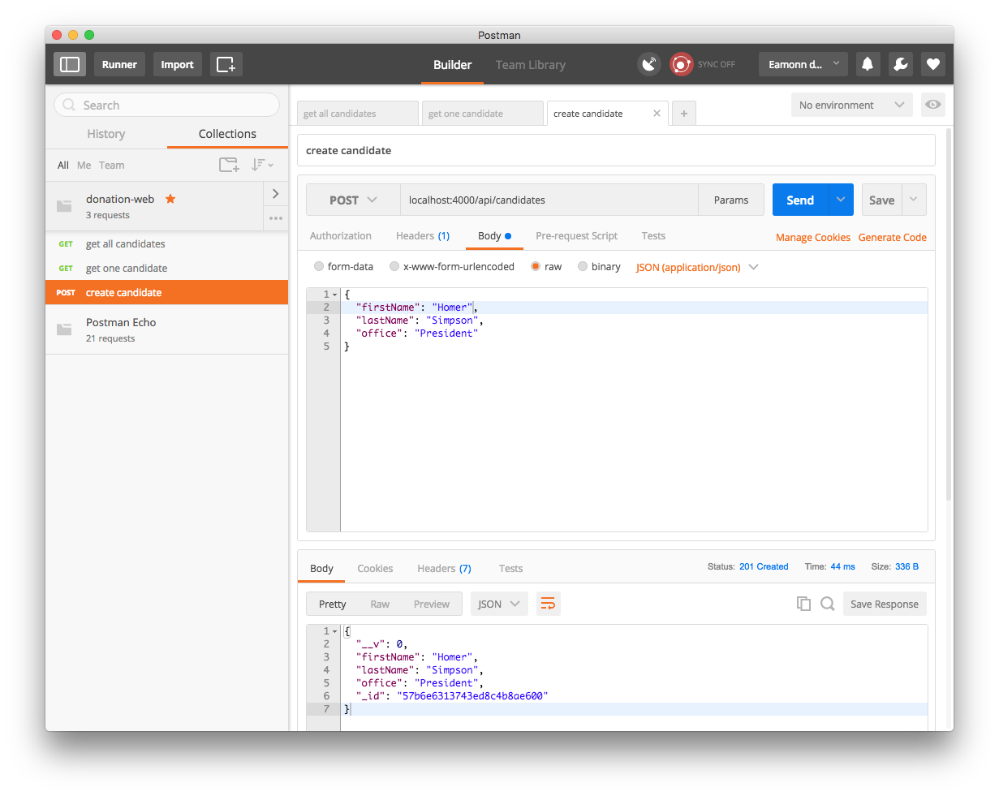
Exercise 3: User Endpoints
Using this lab as a guide, develop a set of endpoints for the users collection, including:
- get all users
- create a user
- delete a user
- delete all users
Also implement tests to verify the endpoints work as expected.